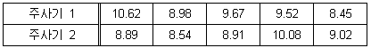
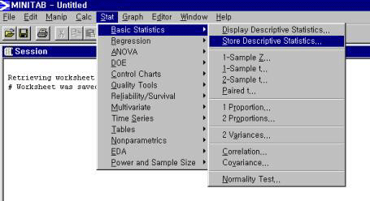
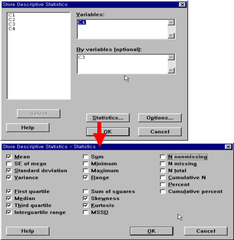
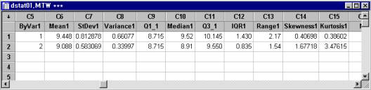

기술 통계량(Descriptive
Statistics)의 산출
Stat> Basic Statistics
> Store Descriptive Statistics 사용
두 개의 주사기로 화학 약품을 병 속에 주입하는 공정에서 주사기별로 주입량의 평균과 산포가
얼마나 되는지 확인하기 위해 각 주사기별로 약품이 충전된 병을 5개씩 샘플링 하여 데이터를 수집하였다. 먼저, 수집된
데이터를 이용하여 여러 가지 기술통계량의 값 을 구해 보기로 하였다.

1. 사용 방법 (데이터 : DStat01.mtw)
1.1 데이터의 입력
Calc> Column
Statistics와 똑같은 방법으로 데이터를 입력한다.
1.2 MINITAB의 실행
① Stat> Basic Statistics > Store Descriptive Statistics

② Variables란에 데이터가 들어 있는 Worksheet의 Column을 기입하고
By Variables 란에
데이터 그룹의 Index가 들어 있는 Column을 지정한다. 또, Statistics를
클릭 하여 구하고자
하는 기술통계량을 모두 선택해 준다.

③ OK를 클릭한다.
1.3 결과 해석
Worksheet에 계산된 기술통계량이 저장된다.

INDEX 1의 데이터는 평균이 9.448, 절단평균이 9.448로서 값이 비슷하므로 이상 치가 없고, 중앙값 9.520이
평균과 별반 차이 없으므로 대체로 평균을 중심으로 좌우 균형 잡힌 분포를 하고 있으나 비대칭 정도는 0.40698이며,
첨도는 0.38602 로 정규분포메 비하여 상대적으로 뾰족하다. 그리고 표준편차의 값이 INDEX 2의 데이터에 비해
크므로 산포가 비교적 크다. INDEX 2의 데이터는 평균이 9.088, 절단평균이 9.088로서 값에 별 차이가
없으므로 이상치가 없고, 중앙값 8.910은 평균과 차이를 보이고 있으므로 한쪽으로 치우친 분포를 하고 있으며 비대칭
정도 는 1.67718이다. 그리고 첨도는 3.47615로 INDEX 1의 데이터에 대한 분포보다 더 뾰족하다. 표준편차는
0.583으로서 INDEX 1의 데이터에 비해 산포가 작다.
|